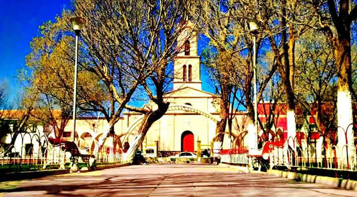
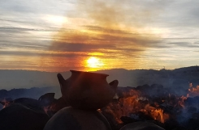
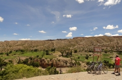

Inicio
Inicio
 Mi Ciudad
Mi Ciudad
 Mi Familia
Mi Familia
 Mis Amigos
Mis Amigos
 Mis Gustos
Mis Gustos
Villazón
|  | ||
|
El Municipio de Villazón se caracteriza por el comercio debido a la ubicación de frontera con la República Federal de Argentina, sin embargo en la última década a tenido políticas de desarrollo productivo, obteniendo logros a nivel Departamental como nacional con el mejoramiento de productos agrícolas como de biodiversidad, en medio ambiente se enorgullece de prestar el manejo de la basura, a nivel Cultura viene trabajando intensamente por recuperar, preservar y difundir la identidad cultural regional, a nivel turístico apoyando y fomentando a las comunidades Rurales para incursionar a futuro la Nueva Ruta a Uyuni y Laguna de Colores con distancias y costos menores mostrando el potencial alfarero, natural y gastronómico regional. Implementando puntos de información y museos comunitarios en Berque y Chipihuayco, Asimismo está trabajando en la implantación de Leyes Municipios de protección del patrimonio cultural material e inmaterial. |
||
Atractivos Turístico |
||
|---|---|---|
|  |  | |
Ruta Cultural y Gastronómica de la Zona Central |
Ruta de la Cerámica en Zona Oeste |
Ruta de los Petroglifos en la Zona Este |
|
Disfruta de actividades en las comunidades de la zona central, practicando senderismo o paseando en bici por la vía verde hacia el norte pasando por pueblos con bastante historia. |
El contraste de colores de las montañas hacen una visita única en las comunidades de la zona Oeste donde encuentras colores rojizos, amarillos y cobrizos que te dan la bienvenida a este paraíso de arcilla, un encuentro de culturas y tradiciones preservadas por generaciones que siguen vivas en las manos de nuestros artesanos alfareros. |
Una propuesta de turismo comunitario y de aventura, donde disfrutaras de momentos únicos compartiendo con los habitantes de las comunidades, paseos a pie o a caballo por ríos, cascadas naturales, donde existen vestigios de antiguas culturas asentadas en toda la quebrada, un lugar donde podrás encontrar petroglifos plasmados de culturas ancestrales. |
Eventos |
||
Día de la ProvincializaciónFecha: 17/09/2020 |
Santa AnitaFecha: 18/07/2020 |
Virgen del CarmenFecha: 16/07/2020 |